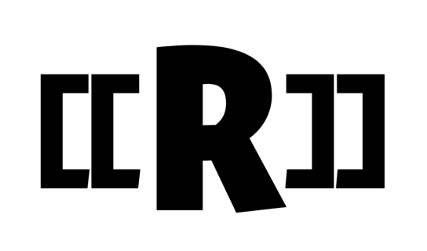
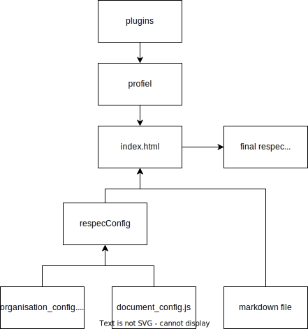

In dit document word de stageopdracht een voorgang bijgehouden,
verder geeft het ook een goede mogelijkheid om het ReSpecprofiel vanuit een gebruikersoogpunt te zien.
Figuur 1 ReSpec logo
Status van dit document
Dit is de definitieve versie van. Wijzigingen naar aanleiding van consultaties zijn doorgevoerd.
De programmaraad van Geonovum heeft deze standaard goedgekeurd.
1. Introductie
1.1 Over dit document
Dit document heeft 2 doelen: het bijhouden van informatie rond de stageopdracht en het documenteren van vooruitgang
richting de stagebegeleider en andere beoordelaars. Dit is een doorlopend document dat up-to-date gehouden zal worden met
de huidige status van de opdracht.
1.2 Wat is Logius
Logius is een overheidsbedrijf wat digitale services onderhoud voor Nederland, dit zijn services zoals DigiD en Digipoort.
ReSpec is een Javascript-script dat helpt bij het maken van documentatie met markdown. Respec helpt bij onderdelen zoals styling, refereren en het bijhouden van bibliografische data. verder helpt het script met het controleren en publiceren van het eindproduct.
Een ReSpec profiel is een combinatie van JavaScript code, HTML en
CSS. Deze files worden door ReSpec plugins genoemd. Door het maken van een profiel kan je de functionaliteit van ReSpec uitbreiden en een bepaalde standaard
forceren in de documentatie gemaakt met het profiel. Verder kunnen er automatisch testen geconfigureerd worden voor
bijvoorbeeld toegankelijkheid, denk hierbij aan kleurcontrasten voor mensen die kleurenblind zijn en
afbeeldingbeschrijving voor slechtziende.
1.5 De afdeling standaarden
Omdat de overheid uit veel kleinere bedrijven bestaat, is het belangrijk dat ze goed met elkaar, met bedrijven en met burgers kan communiceren. Om dit te faciliteren onderhoud Logius standaarden, een voorbeeld van een standaard is BOMOS: hét Beheer- en OntwikkelModel voor Open Standaarden
2. De Stageopdracht
2.1 Wat ga ik doen?
Logius beheert een aantal standaarden die effectieve en veilige gegevensuitwisseling mogelijk maken tussen
overheden onderling en tussen overheden, burgers en bedrijven. De afdeling standaarden draagt bij aan de kwaliteit van
dat beheer en bevordert zowel standaardisatie als het juiste gebruik van open standaarden. Als documentatietool wordt
gebruik gemaakt van ReSpec, een tool om technische documentatie op basis van Markdown te genereren. Logius
heeft hiervoor een eigen profiel ontwikkeld. Zie https://publicatie.centrumvoorstandaarden.nl/
en https://github.com/Logius-standaarden/respec voor meer informatie over onze profielen.
In deze stage ga ik me bezighouden met het verder ontwikkelen van dit profiel om het ook bruikbaar te maken voor andere
overheidsorganisaties. Onderdeel van de opdracht is het door ontwikkelen en onderhouden van de JavaScript Code, het
uitbreiden van de functionaliteit en het ondersteunen van de community met voorbeelden en uitleg.
2.2 Kern van de opdracht
In deze stage ga ik me bezighouden met het verder ontwikkelen van het ReSpecprofiel om het ook bruikbaar te
maken voor andere overheidsorganisaties.
In het huidige profiel zijn parameters niet of beperkt instelbaar, Bedoeling is dat het profiel configureerbaar wordt
zodat andere overheidsorganisaties eenvoudig een eigen profiel kunnen maken voor hun technische
specificaties / documentatie.
Onderdeel van de opdracht is het door ontwikkelen en onderhouden van de JavaScript Code, het uitbreiden van de
functionaliteit (bv het bijblijven met de ontwikkelingen in de w3c versie, en automatische controles) en het
ondersteunen van de community met voorbeelden en uitleg.
Voorbeeld van een ReSpec document opgemaakt met het Logius-profiel:
Digikoppeling Koppelvlakstandaard REST-API 1.0.0 (centrumvoorstandaarden.nl)
In het begin moet de ontwikkelomgeving opgezet worden, de huidige en gewilde functionaliteit in kaart gebracht worden.
Om een goed beeld te krijgen van de user experience zal ik het Logius-ReSpec-profiel gebruiken om dit document
te realiseren.
Het profiel is open-source en samenwerking is belangrijk.
Daarom zal ik als er verbeteringen zijn die ik door wil voeren, eerst
een feature request doen op github zodat alle betrokken partijen de kans
hebben om hun mening te delen.
Aan de hand van de goedgekeurde features kan ik een nieuwe branches
aanmaken. In die branches kan ik dan de gewilde features gaan realiseren.
Na het testen of een nieuwe feature naar behoren werkt kan er een pull-request
gedaan worden. Als die goedgekeurd word zal het profiel de nieuwe feature
hebben. Nu kan er verder gewerkt worden aan nieuwe features.
2.4.2 Begin status codebase
Het project is begonnen met de standaard codebase van ReSpec. Geonovum heeft hierop
een profiel gebouwd voor het schrijven van hun documentatie. Daarna heeft Logius een eigen profiel
gemaakt op die van Geonovum.
ReSpec is origineel vooral gefocust om het schrijven van documentatie met HTML. De profielen van Geonovum
en Logius zijn gefocust op Markdown voor het schrijven van de
documentatie omdat markdown makkelijker in gebruik is.
Er zijn ook al enkele testen ingebouwd voor het controleren of het document wel toegankelijk is.
Er zijn echter nog veel functionaliteiten hardcoded. Er is een config file die erg bloated is en niet erg makkelijk in
gebruik zonder achterliggende kennis in de werking van het profiel.
wil ik dat het ReSpec profiel zoveel mogelijk gebruikt word
Zodat de vorm van documentatie gelijk is tussen overheidsbedrijven
Als afdeling standaarden
wil ik dat regels over toegankelijkheid nagevolgd worden
Zodat de documentatie te gebruiken is door iedereen
Als bedrijf die documentatie schrijft
Wil ik dat ik me makkelijk aan documentatiestandaarden kan houden
Zodat ik mijn communicatie kan verbeteren
Als bedrijf die documentatie schrijft
Wil ik dat ik het profiel makkelijk kan aanpassen aan de eisen van mijn bedrijf
Zodat het overschakelen zo makkelijk mogelijk is
Als bedrijf die documentatie schrijft
Wil ik dat ik het profiel gebruikt maakt van mijn status en statuscodes
Zodat de documentatie overeenkomt met eerder geschreven documenten
Als gebruiker
Wil ik dat ik gebruik kan maken van het profiel
Zodat mijn werk makkelijker, sneller en beter word.
Als gebruiker
Wil ik dat het gebruik van het profiel makkelijk is
Zodat de overstap naar het nieuwe systeem zo min mogelijk moeite kost
Als gebruiker
Wil ik dat ik makkelijk diagrammen kan maken en aanpassen in het document
Zodat de diagrammen niet afhankelijk zijn van images die bij iedere aanpassing opnieuw geupload moeten worden
Als developer
Wil ik dat het profiel makkelijk uit te breiden is met nieuwe functionaliteiten
Zodat het profiel zo makkelijk mogelijk aan te passen is
Als developer
Wil ik dat het profiel up-to-date blijft met de W3C versie
Zodat ik gebruik kan maken van de nieuwste features en verbeteringen
2.6 TODO
Task
Status
Opzetten ontwikkelomgeving
finished
Maken eigen respec document met opdracht in logius respec profiel
unfinished
Sync met w3c versie
unfinished
Beginners guide 'werken met Respec/profiel' maken voor gebruikers
unfinished
NL profiel configureerbaar maken
unfinished
Label van respec document dynamisch maken
in review
Configuratie bestand opsplitsen op basis van type configuratie
finished
SpecType/specStatus updaten naar en tabel in config file
in review
RenderGovernance() updaten in sotd.js
in review
Gebruiker documentatie maken
unfinished
Developer documentatie uitbreiden
unfinished
Documentstatus-texten configureerbaar maken
in review
Visualiseren programmastructuur
in review
Label kleur hangen aan statuscode
in review
Configuratietext multilanguage maken
in review
Errors en warning bijwerken om te werken met nieuwe functionaliteit
in review
Beschrijving controles in template beschrijven in readme
in review
Een structuurfout in de config voorkomen
unfinished
titel van het document configureerbaar maken
in review
issue indienen bij W3C over development guide
finished
2.7 Definition of done
DoD
Status
Alle code is geschreven (alle ‘to do’ items in de code zijn gedaan)
unfinished
Alle commentaar is opgeschoond / alleen relevant commentaar nog in code aanwezig
unfinished
Relevante gebruikersdocumentatie is gemaakt en beschikbaar gesteld
unfinished
Er is een handleiding voor de software
unfinished
‘Alle functionele tests’ zijn gedraaid
unfinished
Code heeft een peer review ondergaan
unfinished
Alle to do items voor de User Story zijn voldaan
unfinished
Het werk is gereviewd
unfinished
Er is een spellingscheck gedaan voor de documenten
unfinished
De documenten zijn gecontroleerd op huisstijl
unfinished
De documenten zijn gecontroleerd op digitoegankelijkheid/compliance
unfinished
2.8 Mijn ervaring
In het maken van de documentatie heb ik het profiel gebruikt, hierdoor kan ik zien hoe het is om een gebruiker te zijn
van het profiel. Wat me opgevallen is dat er Veel dingen zijn die op de achtergrond gebeuren. Het is moeilijk om erachter
te komen waar bepaalde automatisch ingevulde data vandaan komt. Dat betekent dat als je bepaalde dingen aan wilt passen
je de code in moet duiken om te zien welke data je aan moet passen. Verder moet je niet alleen naar de config file kijken,
maar ook in de code zelf omdat er veel dingen hardcoded zijn. Wat wel goed is is dat al die verwarrende data aan het begin
van het bestand getoond word. De rest van de data komt uit .md files die je zelf toevoegt.
Wat me verder opgevallen is is dat er weinig instructies zijn over wat voor configuratie bij welke data hoort. Ook het
feit dat je extra pagina's toe kan voegen door .md files te maken en toe te voegen aan de index.html is niet uitgelegd.
Voor iemand die niet veel ervaring heb met dit type programma's en files is het lastig om erachter te komen wat je moet
doen.
Er zit wel veel potentie in het systeem, na alle configuratie is het heel makkelijk om het document uit te breiden. Ook
is het mogelijk om de organisatie configuratie te hergebruiken. Dus nadat je een keer alles geconfigureerd hebt hoef je
daarna alleen een paar aanpassingen te maken in het document config. Het wordt dus alleen maar makkelijker om het profiel
te gebruiken. Ook het feit dat de styling geregeld word en dat er toegankelijkheid testen gedaan word, geeft de documenten
een professionele uitstraling "out of the box".
Een ding waar ik tegenaan liep bij het maken van nieuwe plugins was dat er een stuk documentatie miste over het tonen van
errors en warnings. respec maakt gebruik van pub/sub voor het maken en handelen van errors. Maar de pub() verwacht een
new reSpecError object in plaats van een string als error message. Dit feit stond niet gedocumenteerd een ook de errors
waren niet duidelijk, de browser gaf alleen aan dat er geen child was van de error of warning. Dit zal gedocumenteerd
moeten worden in de development documentatie en mogelijk zelfs als een issue ingediend worden bij de W3C versie.
2.9 Aanpassingen en redenatie
2.9.1 Intro
In dit hoofdstuk zullen de groote veranderingen gedocumenteerd worden. Er zal een schets gegeven worden van de oude situatie
en de nieuwe situatie om aan te geven waarom bepaalde veranderingen nodig waren. Kleine veranderingen zullen niet
gedocumenteerd worden hier en zijn te vinden in de github history.
2.9.2 Dynamische side label
2.9.2.1 Oud
Ieder document gemaakt met het Logiusprofiel heeft een label aan de linkerbovenhoek van het document.
Dit label bevat de organisatienaam en huidige status van het document, de kleur van het label is gerelateerd aan de
status van het document.
In de originele versie van het profiel word er aan de hand van een aantal config opties een cijfercode gemaakt. Aan de
hand van die code word een stukje CSS geladen die een SVG-file toevoegt aan het document. Het probleem met dit systeem
was dat er in de code, maar ruimte was voor 9 opties per digit. Verder moest er voor iedere optie handmatig een nieuwe
SVG gemaakt worden. Het uitbreiden van de opties was dus gelimiteerd aan 9 opties en kosten extra handwerk voor iedere
optie die je toe wil voegen.
2.9.2.2 Nieuw
Om deze problemen op te lossen is de side label nu dynamisch, het label word gegenereerd met data uit de config file.
Het aanpassen van het label is nu makkelijk omdat je nu alleen de config file hoeft aan te passen. Ook is het label
nu niet meer gelimiteerd door de 9 opties uit het oude systeem.
2.9.3 Gesplitste config files
2.9.3.1 Oud
Om ReSpec te kunnen configureren heeft het project standaard een config file. Deze file bevat informatie over
de organisatie, statuscodes, status van het document en visuele settings.
Deze file voelt alleen erg bloated omdat er verschillende type config opties in hetzelfde document zitten. Verder worden
bepaalde config opties zoals organisatienaam en statuscodes constant hergebruikt binnen een organisatie. In het oude
systeem moeten die opties dus constant opnieuw ingesteld worden als er een nieuw document gemaakt word.
2.9.3.2 Nieuw
In het nieuwe systeem is de originele file opgesplitst in verschillende files die hun eigen functionaliteit hebben. Nu
kunnen er oneindig nieuwe config files toegevoegd worden. Nieuwere files kunnen opties uit oude files overschrijven wat
betekend dat uitzonderingsgevallen altijd nog bijgewerkt kunnen worden. Verder kunnen de niet veranderende config files
(zoals organisatie data bijvoorbeeld) publiek gehost worden en dan in een document gebruikt worden. Dit betekent dat
als er globale data verandert niet alle documenten 1 voor 1 doorgelopen hoeven worden en handmatig aangepast worden.
2.9.4 Vertalingen in config text
2.9.4.1 Oud
Het vertalen van configuratieopties bestaat wel, maar niet bij alle config texten. Als er in de config een scheiding
gemaakt word tussen 2 talen, kan dat object geladen worden in de getIntlData() functie. Deze functie returned de juiste
vertaling aan de hand van de <html lang=""> tag in de index.html
2.9.4.2 Nieuw
Bij de nieuwe versie zullen alle texten in de config file een vertalings-mogelijkheid hebben. Dit betekend ook dat op alle
plekken waar deze texten gebruikt worden de getIntlData() functionaliteiten toegevoegd moet worden. (WIP TBD vertalingen overal
forceren of systeem die herkent of er wel of geen vertalingen zijn en dan dynamisch switched.)
2.9.5 Waarschuwen als er config opties missen
2.9.5.1 Oud
Als er config data mist zal het onderdeel waarin de data gebruikt word niet getoond worden in het resulterende document.
Om te voorkomen dat er onderdelen uit het document missen zonder dat de schrijver het door heeft worden er warnings gegeven
als er config data mist. Deze checks worden gedaan op dezelfde plek waar de data gebruikt word.
2.9.5.2 Nieuw
In de nieuwe situatie is er een plugin die door een lijst van config namen loopt, als die niet terugkomen in de configfiles
zal hij een warning geven. Dit zorgt dat alle warnings hetzelfde patroon hebben en dat de lijst met vereiste configs op
1 plek aan te passen is en je dus niet alle documenten moet doorzoeken om warnings aan te maken.
2.9.6 Het controleren van functionering code na een update
2.9.6.1 Oud
Door het gebruik van node packages ben je afhankelijk van het werk van 3e partijen voor het functioneren van de codebase.
Je wilt niet dat het updaten van een package het functioneren van je profiel aanpast. Dit heeft logius al een keer
meegemaakt toen een onderhouder van een package een donatielink plaatste op alle applicaties die dat package gebruikte.
2.9.6.2 Nieuw
Er is nu een script wat je met node kan runnen. Dit script maakt een statische html versie van een document en vergelijkt
die dan met de vorige stabiele versie. Als er veranderingen zijn in de html geeft het script dat aan, ook geeft het aan
wat en waar dat gebeurt is. Dit is geen complete vervanging voor het nalopen van een npm audit en een handmatige
visuele check maar kan het process wel een stuk sneller maken.
2.10 In kaart brengen software architecture
2.10.1 Intro
In dit hoofdstuk word de huidige en aankomende software architecture beschreven. Het is handig om te weten hoe de software
in elkaar zit. De software bestaat uit het originele w3c code, aanpassingen gemaakt door Geonovum, Logius
en de changes die ik zelf doorvoer. Tijdens het maken van aanpassingen is het opgevallen dat er een stukje stuctuur mist
en ook de documentatie over hoe bepaalde onderdelen werken zou beter kunnen.
Om wat meer duidelijkheid te creëren voor developers van dit profiel zal er hier uitgetekend worden over hoe het project
in elkaar zit.
2.10.2 Node packages
ReSpec runt op Node.js en Node projecten gebruiken open source packages voor veel van functionaliteiten. Deze
packages zorgen dat je veel functies niet zelf hoeft te schrijven want iemand heeft het al voor je gedaan en onderhoud het
ook. Dit betekend alleen dat veel packages weer afhankelijk zijn van andere packages etc. Dit geeft het probleem dat als
er een van de top packages uitvalt opeen alle packages die hem gebruiken ook uitvallen. Om een specifiek voorbeeld te
geven: Een package voor het maken van donatie links had de code aangepast zodat alle packages die hem gebruiken een
donatielink voor Oekraïne in hun applicatie hadden. Je wil niet dat iemand die macht heeft over je applicatie. Je wilt
dus goed in kaart hebben welke packages gebruikt worden door je applicatie zodat je kan inzien dat je betrouwbare
sources gebruikt voor je code. Je moet wel de packages updaten om eventueele veranderingen binnen te halen. Hoe meer
packages je hebt hoe meer code je moet controleren iedere keer als je wilt updaten.
Deze website Laat een web zien van packages en hoe ze verbonden zijn. ReSpec
maakt gebruik van 77 andere packages.
2.10.3 interne structuur ReSpec
2.10.3.1 Overview
Respec werkt met 3 onderdelen:
Het grootste onderdeel is de JavaScript code die runt op Node.js
De index.HTML-file, dit is de fundering waarop het uiteidelijk document gebouwt word.
De config data en .md files. Dit is de data die de gebruiker aanpast om het document te maken. Deze files worden
geladen door ze te includen in de HTML-file.
Het nadeel van dit systeem is dat de Node code gebruikt maakt van data uit de config data, maar die link gaat via de
HTML-file. Dat betekent dat die link pas bestaat in runtime, dit maakt het fixen van bugs of het achterhalen van informatie
lastiger.
Het systeem is niet gebouwd met een class structuur in gedachten. Refactoren kan maar het is niet de bedoeling om alles
te herschrijven voor de vorm alleen. Dit is de reden dat het netjes in kaart brengen van alle onderdelen lastiger is en
ik me vooral zal focussen op de relevante onderdelen van de codebase.
2.10.3.2 Node ReSpec level
Respec maakt gebruik van een systeem van plugins. Een plugin is een geëxporteerde async run() functie. Deze
run-functie wacht tot de code in je functie klaar is met runnen.
Een profiel is een array van plugins, in een profiel worden alle plugins geïmporteerd en dan allemaal een voor een
uitgevoerd.
In de plugins kan je bij de config vars door het conf. object te gebruiken.
2.10.3.3 Index HTML level
De index file is een html file die functioneert als de fundering waar het uiteindelijke document op gebouwd word. In
deze file worden alle config en .md files ingeladen.
2.10.3.4 config/.md level
Dit level bevat alle files die je als gebruiker aan wilt passen. Dit zijn de config files en .md files.
De config files zijn JavaScript files die door de Node level gebruikt worden voor het configureerbaar maken van bijvoorbeeld de "status
van dit document" informatie.
De .md files zijn files geschreven in markdown. Ze bevatten alle tekst en geven de structuur van het document aan met koppen
en sub-koppen.
2.10.3.5 diagram
Figuur 2 Diagram met onderdelen van verschillende levels
3. Documentatie voor goedkeuring stage
3.1 Probleemanalyse
3.1.1 Wat is het probleem?
Logius heeft een eigen profiel aan gemaakt binnen ReSpec, een stuk code
die help bij het maken van markdown documentatie. Dit profiel is in de
eerste fase en is nog niet erg gebruiksvriendelijk. Het doel is uiteindelijk dat het profiel gebruikt kan worden door
derde partijen voor het realiseren van eigen documentatie.
3.1.2 Afbakening en relevantie
Het project focust zich op het ReSpec profiel en het template. Dit
zijn dingen zoals de code, gebruikersinteractie en documentatie.
3.1.3 Wie heeft het probleem?
Omdat de nederlandse overheid bestaat uit veel kleine bedrijven is
goede communicatie erg belangrijk, om die communicatie is goede banen
te leiden zijn afspraken nodig. Deze afspraken kunnen zijn over hoe
een document er uit moet zien, maar ook over hoe informatie verzonden word.
De afdeling standaarden van Logius beheerd
standaarden om die communicatie tussen burger, bedrijf en overheid zo
soepel mogelijk te laten verlopen. Het ReSpecprofiel helpt met het
schrijven van documentatie, maar als het niet gebruiksvriendelijk is
zal het niet gebruikt worden.
3.1.4 Onderzoeksproces
Het onderzoek zal een doorlopend proces zijn, iedere feature zal getest moeten
worden. Om te kunnen testen hoe het is om een gebruiker te zijn van het
profiel schrijf ik de documentatie voor mijn stageopdracht in dit document
die gebruik maakt van ReSpec en het Logius-profiel. Er zijn ook
ander overheden die potentie zien in het profiel, zij kunnen ook
helpen in het proces om te kijken of het profiel wel echt
gebruiksvriendelijk is.
3.1.5 Diepgang problemen
Het Logiusprofiel is open source en samenwerking is erg belangrijk.
Daarom worden de problemen en verbeterpunten gedeeld via issues
op de github van Logius-standaarden. Daar zijn de specifieke problemen
te vinden.
3.1.6 Doelstelling
Het doel van dit onderzoeksproces is dat er een lijst met issues publiek
toegankelijk is die gebruikt kan worden bij het verbeteren van het profiel.
3.2 Het bedrijfsbezoek
Ingeplanned op: vervallen
De 1e week van mijn stage heb ik contact gehad met Hans Middelkoop.
In overleg is besproken om het bedrijfsbezoek te combineren met Inleveren stageverslag 1e fase - Oriëntatie & beoordeling
3.3 Inleveren stageverslag 1e fase - Oriëntatie & beoordeling
14 okt 2022
3.4 Inleveren stageverslag 2e fase - Aan het werk en beoordeling
9 dec 2022
3.5 Inleveren stageverslag 3e fase - Oplevering en eindbeoordeling
2-20 jan 2023
4. Conformiteit
Naast onderdelen die als niet normatief gemarkeerd zijn, zijn ook alle diagrammen, voorbeelden, en noten in dit document niet normatief. Verder is alles in dit document normatief.